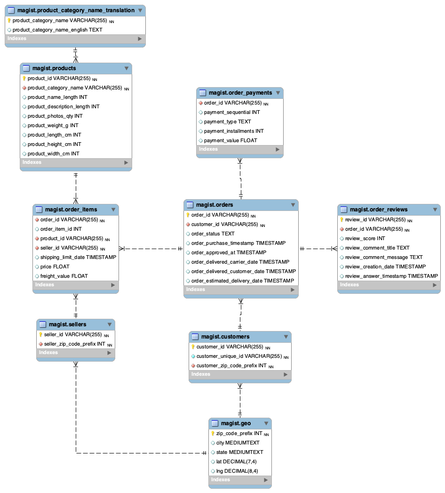
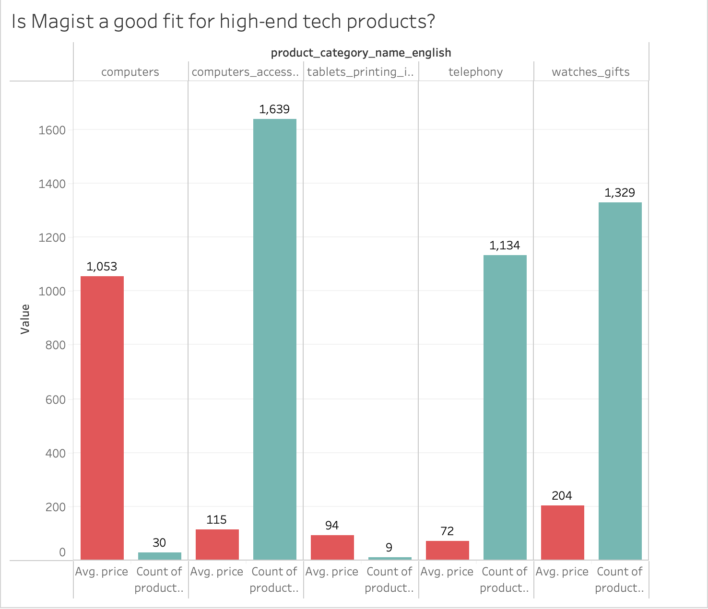
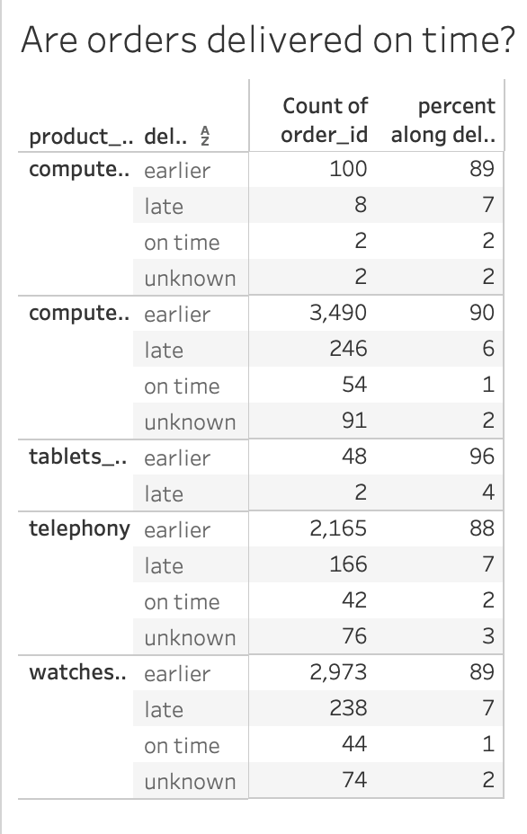
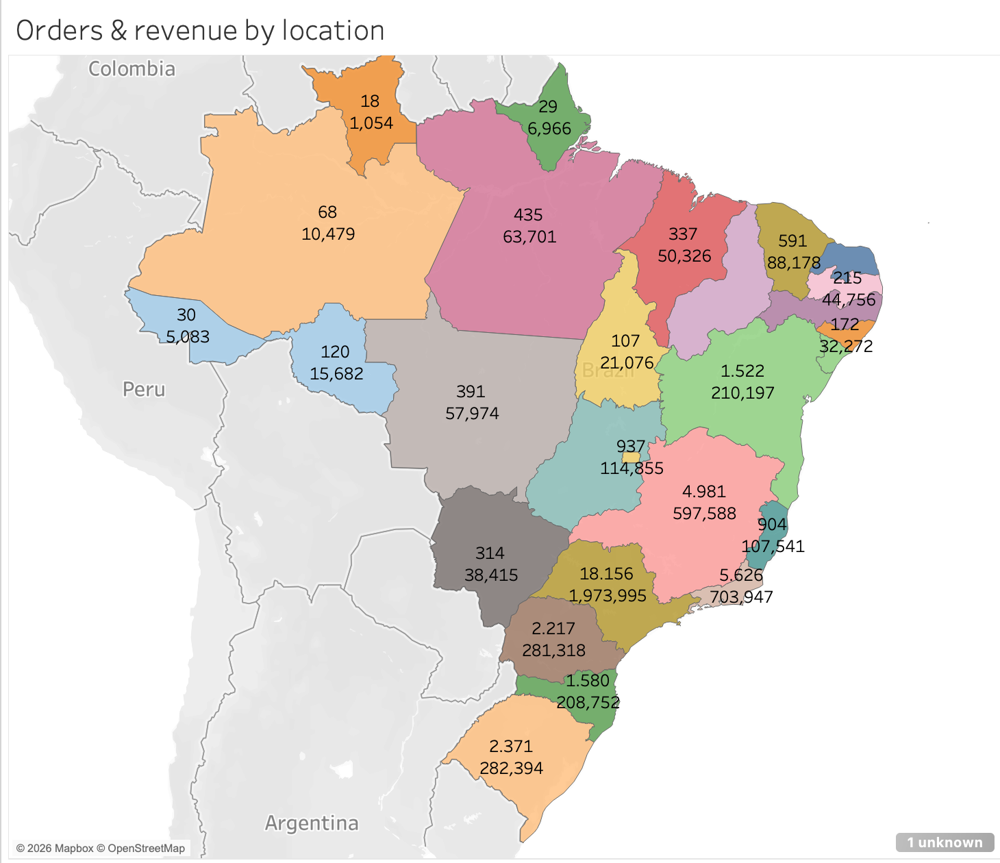

Should Eniac partner with Magist to enter Brazil?
A Spain-founded marketplace known for premium Apple products and curated accessories, exploring expansion into Brazil.
A Brazilian SaaS platform connecting small and medium stores to major marketplaces, also handling warehousing, shipping, and customer service on sellers' behalf.
Understanding the data
Before answering anything, I had to understand what I was working with: a snapshot database with 9 linked tables — orders, customers, sellers, products, payments, reviews, geolocation, and category translations. Mapping this out first made every query afterward much easier to write correctly.

Four findings
Not a high-end tech specialist
I flagged five categories as "high-tech": computers, computer accessories, tablets/printing, telephony, and watches/gifts. Computers make up just 0.21% of orders (203 out of ~99k) — but they carry the highest average price ($1,053) and the best customer reviews of any tech category.

Delivery is a genuine strength
Across every tech category, the overwhelming majority of orders arrive before the estimated delivery date — between 88% and 96%, depending on category.

The revenue gap
Tech categories are a minority of Magist's business, but not a trivial one.
Geography matters for expansion
Orders and revenue are heavily concentrated in São Paulo and the southeast — exactly where Eniac would want the strongest overlap if entering the market.

My take
Stack & approach
| Database | MySQL Workbench — 9-table relational schema, hand-written joins and window functions |
| Visualization | Tableau Public — geographic maps, bar charts, and breakdown tables |
| Scope | Business case analysis: partner evaluation for market expansion |
| What's next | Investigate the September/October 2018 cancellation spikes before trusting the full-period averages |